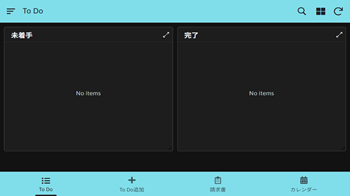
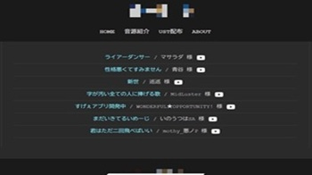

ポートフォリオ
桑田 菫花
私について
PCやスマートフォンを活用し、AviUtlやAudacityを使った音声,動画編集、HTML/CSSによるWebサイト制作をしています。
制作においては、ユーザーが直感的に操作できるUI/UXデザインを特に意識しています。新しい技術を積極的に学び、自身の制作に活かすことに強い関心があります。
スキル
言語・ツール
- JavaScript
- HTML
- CSS
- Git
- VS Code
- Google Workspace
AI ツール
- ChatGPT
- Gemini
- Claude
その他
- Premiere Pro
- AviUtl
- AviUtl2
- Audacity
資格
- MOS(Excel)
※資格取得のため引き続き勉強中です。
制作記録
AppSheet製タスク管理アプリ

イベント登録・編集、タスクの進捗管理、リマインダー機能を備えたタスク管理アプリ。
情報の整理、期限の可視化、タスクの抜け漏れ防止を目的としています。
使用技術: AppSheet, Googleスプレッドシート, Gemini
個人制作Webサイト

自作素材(ust)などを配布するシンプルなサイト。
作品や活動情報を効果的に発信し、作品の置き場としての機能を持たせることを目的としています。
使用技術: HTML, CSS
人口音源
複数の効果音から作成した中の人のいない音源。
自作サイトなどで人間の代わりに話し,歌い,解説してもらうことを目的としています。
使用技術: Audacity
これから
現在はAIツールに頼る部分も多いですが、今後も学習を続け、より複雑でインタラクティブなWebアプリケーションを自身の力で開発できるようになることを目指します。
AIを効果的に活用しつつ、プログラミングの基礎力をより一層強化することで、将来的にはユーザーの課題を技術で解決できるWebエンジニアとして成長していきたいです。
お問い合わせ
ご不明な点があればこちらからお願いいたします。
Email : s.kuwata.asutri@gmail.com